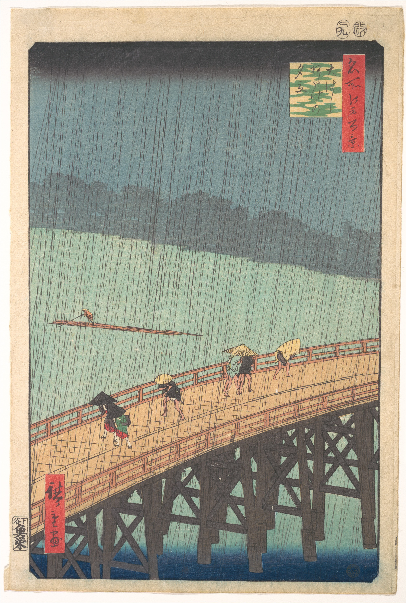

教材を選ぶ
学ぶ
問う
鍛える
観る
調べる
巡る
歴史する 授業ポータル
問う
問題に取り組み、
知識と考える力を
たしかめる。
演習アプリ
一問一答
基本事項を確認する
→

時代と流れ
出来事の前後関係を整理する
→
紙で取り組む
一問一答・
一文論述・年代整序
三
すべて
一問一答
一文論述
年代整序
時代
すべての時代
旧石器
縄文
弥生
古墳
飛鳥
奈良
平安
鎌倉
南北朝
室町
戦国
安土桃山
江戸
幕末
明治
大正
昭和戦前
戦後
平成
令和
教材一覧の表示にはJavaScriptを有効にしてください。